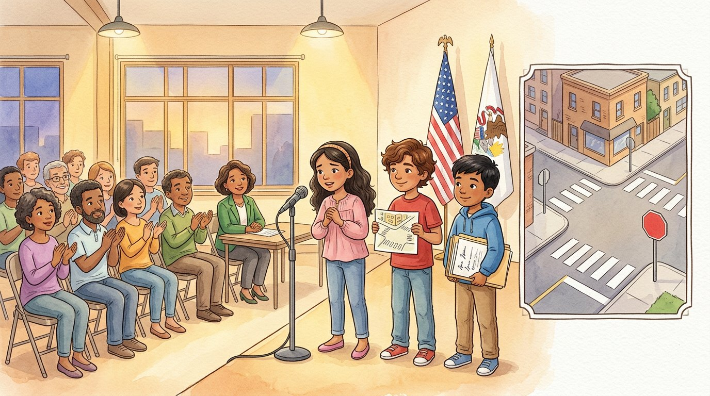

Grade 4 · Social studies · SS.4.CV.4 · SS.4.CV.2
Signatures for the corner
A story about rights, responsibilities and how laws can change.
Social studies words you will learn
Tap a green word to see what it means.
The story
Every morning, Selena and Elías crossed the same street corner on their way to school. Cars zoomed by, and there wasn't a single stop sign. "Someday somebody's going to get hurt," Selena said, hugging her backpack.
In class, Ms. Rivera wrote on the board: "Rights and Responsibilities." "A is something all people are free to do or have, and the law protects it," she explained. "For example, the right to say what you think and the right to ask the government to change something."
"And a is something we should do," she added. "Follow the laws, respect other people's rights and take care of our community. Grown-ups also have the responsibility to vote."
Israel raised his hand. "Can a be changed?" "Yes," Ms. Rivera answered. "In a , power comes from the people. People can change laws by talking to their representatives, signing petitions and voting."
Elías's eyes lit up. "Let's start a for the corner!" A petition is a letter signed by many people to ask the government for something.
For two weeks, the three friends knocked on doors with their families. Selena explained the problem, Elías showed a map of the corner, and Israel guarded the folder like buried treasure. They collected 214 signatures. The lady from the bakery signed twice, so they had to cross one out. "Everybody signs only once," Elías told her with a smile. "That's what makes it fair."
One evening they went to a community meeting with their , the person chosen by voters to represent their part of the city. The alderperson is a member of the , the group of elected people who make the laws for the city.
Selena stepped up to the microphone. Her knees were shaking, but her voice was clear. "We want to get to school safely." The neighbors clapped, and the alderperson promised to look into the petition.
A month later, city workers painted a brand-new crosswalk and put up a stop sign on the corner. On the first day, every car stopped. Selena and Elías crossed slowly, waving like movie stars.
"We didn't have to yell or fight," Israel said. "We just used our rights and did our part." Elías laughed. "And we crossed out one extra signature."
Glossary
- right
- Something all people are free to do or have, which the law protects.
- responsibility
- Something we should do to take care of ourselves and others, like following the law.
- law
- A rule made by the government that everyone must follow.
- democracy
- A form of government in which power comes from the people, who choose their representatives and vote.
- petition
- A letter signed by many people to ask the government for something.
- alderperson
- The elected person who represents a neighborhood in the Chicago city government.
- city council
- The group of elected people who make the laws for a city.
Questions
Choose the correct answer. If you make a mistake, the story shows you where the answer is.
-
Question A. What is a right?
A right is something all people are free to do or have, and the law protects it.
-
Question B. Which of these is a responsibility?
Following the laws and respecting other people's rights are responsibilities.
-
Question C. How can people change a law?
In a democracy, people change laws by talking to their representatives, signing petitions and voting.
-
Question D. What is a petition?
A petition is a letter signed by many people to ask the government for something.
-
Question E. What does the city council do?
The city council is the group of elected people who make the laws for the city.
Challenge: explain your thinking
Speak up
Only grown-ups can vote for the alderperson. How did the three friends make their voices heard anyway? If you went to the meeting, what two facts would you present to convince the alderperson?
Answer in your notebook or talk it over with a classmate. Use evidence from the story.
Check your thinking
They started a petition, collected signatures with their families and spoke at a community meeting. Useful facts: how many cars pass the corner without stopping, how many students cross it every day, a map of the corner and the 214 signatures.